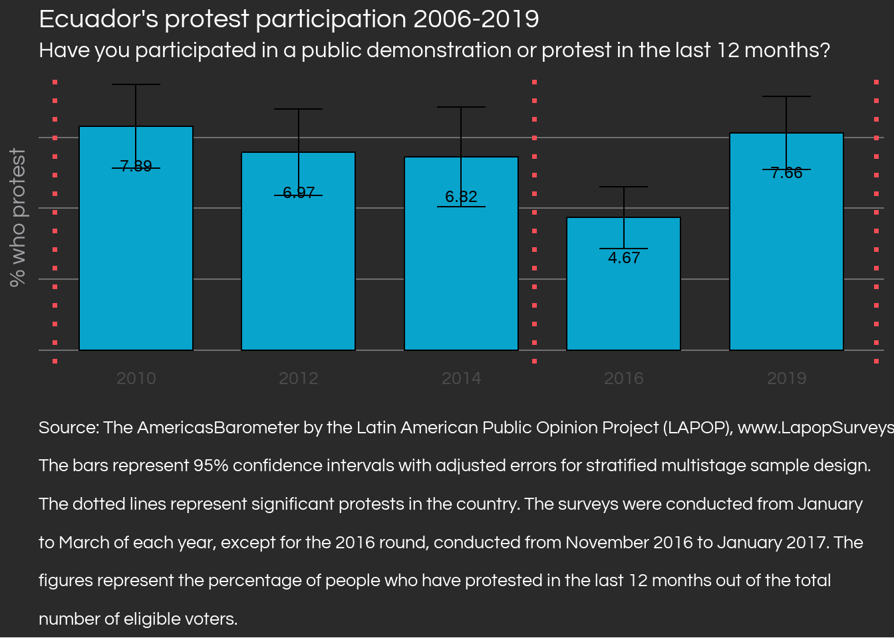
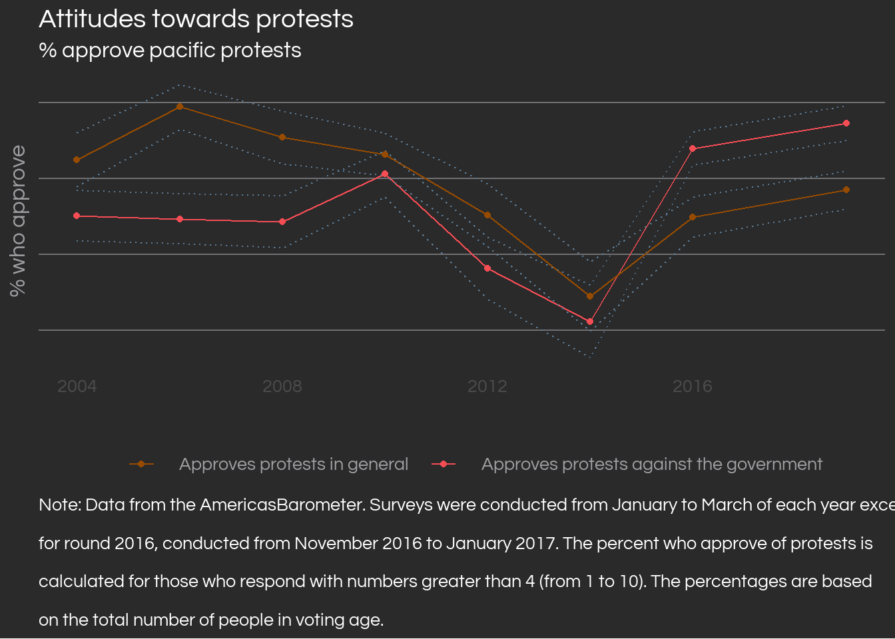
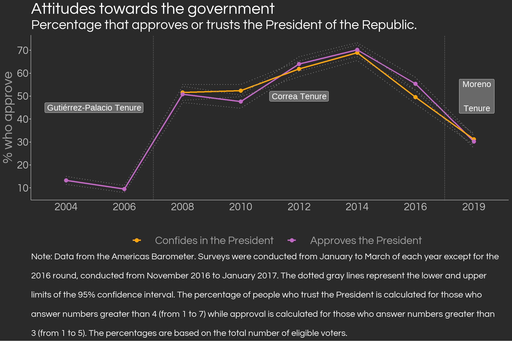

Note
This post was originally published on El Quantificador, the general interest blog of the Research Laboratory for Development in Ecuador (LIDE for its initials in Spanish), an Ecuadorian research nonprofit whose goal is the research and dissemination of evidence-based public policy.
Ecuador ended the first half of 2022 with 18 days of protests, making it the longest national protests (Paro Nacional) in recent decades. Given the growing political, social and economic crisis as well as the lack of guarantees for a peaceful resolution, it is important to understand how Ecuadorians behave during protests. An analysis of the AmericasBarometer public opinion survey reveals that those who participate in protests are more likely to be men, to respect the right to protest in general, to disapprove of the President’s management and to identify with a political group. Notably, the survey results suggest that those who self-identify as indigenous, whose economic situation has worsened, and who are unemployed are not more likely to participate in protests. It is also discovered that respect for the right to protest moves against support for the current President, revealing a worrying situation: the Ecuadorian might only respect this right when the protests align with their political interests.
July 2022- January 2023 Issue
ISSN 2953-6456
Reproducibility
The code used for this post is included in the source code of this website, which you can find on my GitHub profile. However, to produce the code for the clean database, I recommend checking out the note at the end of the article.
Protest Participation
La participación en protestas
In mid-June 2022, the Confederation of Indigenous Nationalities of Ecuador (CONAIE) called for a massive mobilization in the country in order for President Guillermo Lasso to include ten economic and social demands in his government plan [1]. After 18 days of demonstrations, the strike ended following an agreement between the national government and CONAIE [2]. The demonstrations left Ecuador with nine deaths, millions of dollars in damages and economic losses, as well as several injured and apprehended by the police [3–5].
Ecuador seems to have lost the relative political stability it had during Rafael Correa’s ten years in government, especially considering the historic protest of October 2019, also led by CONAIE against the government of then-President Lenín Moreno [6]. However, periods of stability in our country have been the exception rather than the norm. Historically, Ecuador has had a coup d’etat every 6 years, and 50% of these were successful in overthrowing the current government [7].
The Barometer of the Americas (AB) survey by the Latin American Public Opinion Project (LAPOP) has conducted several public opinion polls in Ecuador since 2004, including a series of questions on protests since 2006. The last time these questions were asked was at the beginning of 2019, which allows us to observe public opinion just before the October 2019 protest, where CONAIE and other organizations also called for mobilizations against then-President Lenín Moreno.
The above chart shows that in 2006, around 21.57% of respondents reported attending a protest in the last 12 months —likely due to the “Rebellion of the Outlaws” that overthrew President Lucio Gutierrez—. From that year on, the percentage of participation gradually decreases in the country, culminating at the beginning of 2019 with 7.66%. In the summer of 2015, there were significant mobilizations called by CONAIE and opposition politicians against the government of Rafael Correa [8,9]. However, the demonstrations seem to have not mobilized as many people, even though they coincided with the lowest popularity of the then-president’s regime [10].
Characteristics of protesters
Ecuadorian protestors have historically been predominantly male, except in 2014 and 2019 where there were no statistically significant differences between men and women. Those who protest are more likely to be affiliated with a political group1 and to disapprove of the president’s performance. While protestors are generally younger and more educated than those who do not protest, the difference is almost negligible - contrary to what one might think.
Are those who take to the streets poorer than those who do not protest? No. In fact, only 33% of those who protest consider that their economic situation is worse than 12 months ago. This percentage is only slightly higher than the percentage of non-protesters who consider that their situation has worsened. Similarly, the historical unemployment rate 2 of protesters is not statistically different from the global unemployment rate of the sample -except in 2014, where there is a ten percentage point difference-.”
A key detail about protesters is their racial composition, and survey data shows that there are no statistically significant differences between the historical percentages of indigenous protesters and non-protesters. In fact, the percentage of indigenous people among all protesters is close to only 5% historically from 2006 to 2019. This low figure may be underestimated as not many surveys are conducted in rural cantons, where the indigenous population is concentrated. However, it makes sense to think that the actual figure should not deviate much from the one presented here: since indigenous people are a minority of the country’s population3, it is likely that they also constitute a minority among those who participate in protests. On the other hand, there is a statistically significant difference in protest participation regarding the percentage of people who self-identify as white, as it is less likely for them to protest.
Participation in protests vs. support for the right to protest

It is relevant to consider a key difference that may have been easily confused lately, especially while the protests were taking place: participation in protests is not the same as approval of them. LAPOP’s AmericasBarometer allows to construct a time series to monitor Ecuadorians’ historical support for protests, as seen below.
The data shows us that prior to the 2019 protest, the right to protest both in general and by opposition groups has been approved by the majority of the voting age population, except in 2012 and 2014. Initially, more Ecuadorians support protests in general than protests by groups against the current government4. However, the relationship reversed for 2016, near the end of Correa’s government, where it was more likely for a person to approve protests against the current government than protests in general.

Note: Data from the Barometer of the Americas. Surveys were conducted from January to March of each year except for the 2016 round, conducted from November 2016 to January 2017. The dotted gray lines represent the lower and upper limits of the 95% confidence interval. The percentage of people who trust the President is calculated for those who answer numbers greater than 4 (from 1 to 7) while approval is calculated for those who answer numbers greater than 3 (from 1 to 5). The percentages are based on the total number of eligible voters.
One fact that stands out is that the period of lower tolerance to protest occurred during the peak of popularity of Rafael Correa’s government, as can be seen in the graph on the right. In periods where the president was popular, there was greater rejection of protest while in periods where the president was less popular there was more approval of protest. Since Lenín Moreno distanced himself from the old regime, there is again a greater tolerance for protest. We should not infer causality of correlation alone, however, these facts open the door to a possible explanation of protests at convenience. That is to say, protests are valid and legitimate when they align with my interests and political tendencies, but if not? are they not valid?
Table 1: Approval of the right to protest by participation in protests in the last 12 months
| Has participated in a protest | Approves | Does not approve |
|---|---|---|
| Yes | 74% | 26% |
| No | 57% | 43% |
| Has participated in a protest | Approves | Does not approve |
|---|---|---|
| Sí | 62% | 38% |
| No | 55% | 45% |
The table above shows the historical percentage of two types of approval of protests ranked by participation in protests. As would be expected, a protester is more likely to approve of the right to protest than someone who has not protested. However, those who participate in protests would also be expected to broadly approve of the right to protest in any setting, but there are 26% who have not historically approved of it. Regarding support for protests by groups opposed to the government, the percentages are worse: historically 38% of protesters do not approve of that right. This is a strange and worrisome phenomenon that deserves to be looked at more closely in the future, with updated data.
Some implications
The analysis can be summarized in the following points:
Protesters tend to approve of the right to protest (although not as much), identify with some political wing (right, left, or center), and disapprove of the president’s job. Female and white protestors are less likely to be found.
There are no significant differences between protestors and non-protestors in terms of age, years of schooling, the probability of being indigenous, being unemployed and having a worse economic situation.
A clear divergence is found between participation in protests and approval of protests, with the percentage of approval always being much higher than that of participation.
Interestingly, approval of protests moves against support for the incumbent president. The more popular the government, the less respected the right to protest.
It is necessary to understand what the protests imply, both for those who lead and face them and for ordinary citizens. In my opinion, it is even more important for the average Ecuadorian to understand them, since they are the ones who are usually in the front line of the demonstrations, as opposed to the politicians, leaders and authorities who lead them. State violence towards social protest is not justifiable, as well as the minimization of the problems that afflict indigenous communities5, but violence by protesters cannot be justified either. Informing our discussion about the conjuncture of the country with facts, free of ideology and subjectivity, is extremely imperative to move towards a better nation, avoiding violence and social polarization as well as protecting the right to peaceful protest, key to the proper functioning of a democracy [12].
The June 2022 protests end with concessions from both sides, which unfortunately only revolve around the price of gasoline, postponing to the medium term the resolution of the other problems such as obtaining fair prices for agricultural producers and the management of the insecurity crisis. History threatens to repeat itself at this dialogue table, remembering that in 2019 the protests ended by a stabilization of the price of gasoline although the actors involved were unable to reach an agreement [6]. Our country cannot put up with more violence between protesters and authorities every two years; social actors must strive for Ecuador to be just that: a country, and not a blender[^5] to which you give something whole and it gives it back to you crushed. We must demand from the rest and demand from ourselves the strength to build a country of peace and prosperity, but also a country of peaceful and effective change when it is needed.
Note
This post was proudly conceived with Quarto and R using RStudio, originally published in El Quantificador from Laboratorio de Investigación para el Desarrollo del Ecuador (LIDE). Visit the GitHub repository to replicate the calculations and learn a bit more about the data, and feel free to contact me or El Quantificador’s team with questions. We used the open-access AmericasBarometer databases, for which we thank the Latin American Public Opinion Project (LAPOP) and its major donors (the United States Agency for International Development, the United Nations Development Program, the Inter-American Development Bank, and Vanderbilt University) for making the data available.
References
1.
Pazmiño, L.B. Esto sabemos del paro del 13 de junio. GK 2022.
2.
GK El paro nacional terminó. GK 2022.
3.
María, J.; Janetsky, M. ¿Por qué hay protestas en Ecuador? The New York Times 2022.
4.
Montalvo, D. Daños por protestas le costaron a Quito $25.000 esta semana. La República EC 2022.
5.
Redacción El Comercio Las protestas causan 4 problemas. El Comercio 2022.
6.
Cultura política de la democracia en Ecuador y en las Américas 2021: Tomándole el pulso a la democracia; Moscoso Moreno, A., Moncagatta, P., Donoso, J.C., Larrea, S., Montalvo, J.D., Eds.; 2022;
7.
Loaiza, Y. Un golpe cada 6 años: la trágica historia de derrocamientos y convulsión social del Ecuador. infobae 2022.
9.
BBC Mundo Ecuador: en Quito y Guayaquil marchan nuevamente contra Rafael Correa. BBC News Mundo 2015.
10.
Meléndez, C.; Moncagatta, P. Ecuador: Una década de correísmo. Revista de Ciencia Política de Santiago 2017, 37, 413–448, doi:10.4067/s0718-090x2017000200413.
11.
13.
Dell, M. The Persistent Effects of Peru’s Mining Mita. Econometrica 2010, 78, 1863–1903, doi:10.3982/ECTA8121.
Footnotes
17% of people who protest report not having a political identification, while a higher percentage of non-protesters (23%) report the same. Political groups to choose from in this question are “the left” and “the right”, denoted by a scale of 1 to 10.”↩︎
Unlike the normal unemployment rate, calculated based on the total economically active population, this unemployment rate is calculated based on the total number of people of voting age, so we must be careful when comparing it to the rates reported monthly by INEC.↩︎
For 2020, indigenous people constituted around 6% of the national population [11].↩︎
The original question in the survey asks about the degree of approval for the possibility of people who “always speak badly of the current form of government and the government system” [12].↩︎